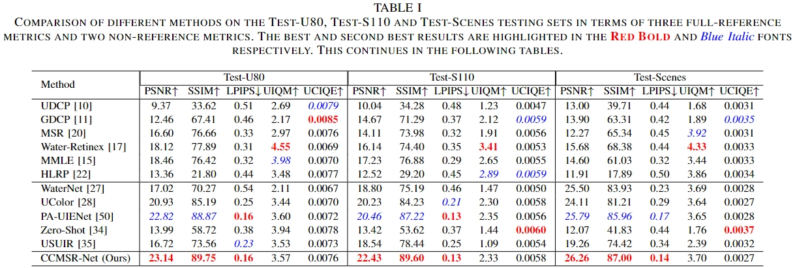

Deep Color-Corrected Multi-scale Retinex Network for Underwater Image Enhancement

|
The proposed Color-Corrected Multi-scale Retinex Network (CCMSR-Net), which comprises a Color Correction subnetwork (CC-Net) and a Multi-scale Retinex subnetwork (MSR-Net).
Abstract
The acquisition of high-quality underwater images is of great importance to ocean exploration activities.
However, images captured in the underwater environment often suffer from degradation due to complex imaging conditions,
leading to various issues, such as color cast, low contrast and low visibility. Although many traditional methods have been used to address these issues,
they usually lack robustness in diverse underwater scenes. On the other hand, deep learning techniques struggle to generalize to unseen images,
due to the challenge of learning the complicated degradation process. Inspired by the success achieved by the Retinex-based methods,
we decompose the Underwater Image Enhancement (UIE) task into two consecutive procedures, including color correction and visibility enhancement,
and introduce a novel deep Color-Corrected Multi-scale Retinex Network (CCMSR-Net). With regard to the two procedures,
this network comprises a Color Correction subnetwork (CC-Net) and a Multi-scale Retinex subnetwork (MSR-Net),
which are built on top of the Hybrid Convolution-Axial Attention Block (HCAAB) that we design. Thanks to this block,
the CCMSR-Net is able to efficiently capture local characteristics and the global context.
Experimental results show that the CCMSR-Net outperforms, or at least performs comparably to, 11 baselines across five test sets.
We believe that these promising results are due to the effective combination of color correction methods and the multi-scale Retinex model,
achieved by jointly exploiting Convolutional Neural Networks (CNNs) and Transformers.
Shared Encoder-Decoder Network

Lightweight Axial Self-Attention

Experimental Results
|  |

|
Quantitative Results on UIEB, SUIM-E, EUVP and RUIE data sets.

|

|
Qualitative Results on Real World Underwater Images.
We referred to the project page of BracketFlare when creating this project page.